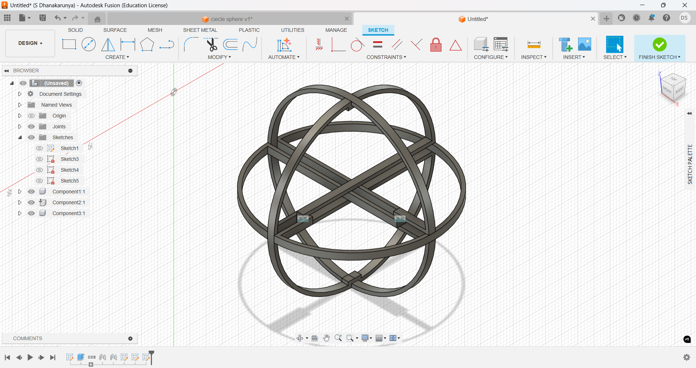
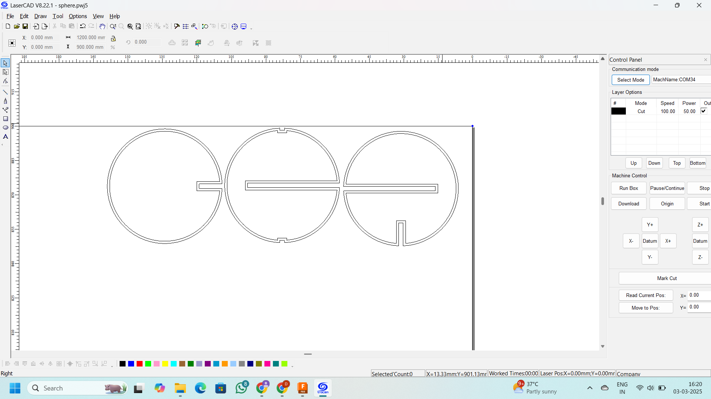

Creating a Hollow Sphere Using a Laser Cutter
Objective
This project aims to design and fabricate a precise, lightweight, and durable hollow sphere using 2mm thick MDF and a laser cutter. The internal diameter is set at 75% of the outer diameter to balance strength and material efficiency. The design allows the sphere to be assembled without glue, ensuring easy disassembly and reassembly.
Approach
To construct the sphere, various design methods were considered:
- Volleyball/Tennis Ball Style – Uses interlocking curved rings.
- Football Style – Forms a geometric sphere using pentagons and hexagons.
- 4V Dome (Geodesic Sphere) – Composed of triangular panels.
- Cone Shape Method – Stacks conical segments to approximate a sphere.
- Half-Sphere Method – Uses slotted rings for a hemispherical shape.
- Layered Contours Method – Stacks circular layers for a precise, sturdy structure.
Chosen Method: Layered Contours
The Layered Contours Method was selected due to:
- Structural durability without complex interlocking parts.
- Efficient laser cutting without kerf adjustments.
- Self-locking design, allowing assembly without glue.
Design Process in Fusion 360
3D Modeling
- Created a 50mm outer diameter sphere with a 37.5mm internal diameter.
- Sliced the model into 25 layers, each 2mm thick (matching the MDF thickness).

2D Sketch Conversion
- Converted the sliced 3D model into 2D sketches for laser cutting.
- Optimized material usage by arranging slices efficiently to minimize waste.
Export & Laser Cutting
- Exported the 2D sketches as DXF files.
- Imported DXF files into LaserCAD and set laser parameters:
- Power: 60
- Speed: 30
- Ensured precise cuts while minimizing burn marks on MDF.
Assembly Process
- The pieces are designed with interlocking slots, allowing assembly without glue.
- Each layer fits securely into the next, maintaining the 37.5mm internal diameter.
- Verified structural integrity and alignment for a smooth, uniform spherical shape.

Conclusion
By using the Layered Contours Method, a precise and robust hollow sphere was successfully fabricated with minimal material wastage. The glue-free interlocking design adds flexibility, making the sphere reusable and easy to disassemble.
Future Enhancements
- Exploring alternative materials (acrylic, plywood) for varied applications.
- Optimizing laser settings for improved edge quality.
- Adding customized engravings for enhanced aesthetics.
This method proves to be an efficient and versatile approach for laser-cut 3D structures.